Top Tracks of 2015
By No Ripcord Staff
 23. Sufjan Stevens
23. Sufjan Stevens
 9. Grimes
10 December, 2015 - 08:52 — No Ripcord Staff
9. Grimes
10 December, 2015 - 08:52 — No Ripcord Staff
2015 has been another rich and varied year for music, and below we reveal the 25 tracks that have rocked out collective socks the most over the past dozen months. And this year you can listen to all 25 on our Spotify playlist - simply click here to load it.
25. Natalie Prass
“Bird of Prey”
(from “Natalie Prass” on Spacebomb Records)
There has been no shortage of pop-leaning indie musicians using bright music as a soundtrack to their dark words, but rarely has the form been taken as far as Natalie Prass takes it on Bird of Prey. The most radio-ready song from her astounding debut album, the song floats by on an irresistible ‘70s Motown groove, a perfectly interlocking concoction of piano, flute, strings, trumpet and bass that never becomes melodramatic or maudlin. It sits in contrast with the sinister undertones of the lyrics, which detail the borderline-violent obsession of an ex-lover through the titular metaphor. However, Prass provides an unusual level of nuance here, with the double meanings of lines like, “Never have I felt arms this tight on me before”, and the self-blaming, “I never said I didn't want you knocking on my door.” Rarely does something so ugly sound so pretty. Brad Hanford
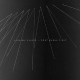24. Alabama Shakes
“Don’t Wanna Fight”
(from “Sound & Color” on Rough Trade)
Our first taste of Alabama Shakes’ excellent 2015 album Sound & Color came back in February of this year in the form of the soulful blues track Don’t Wanna Fight. Introducing a slightly more mature and experimental sound than previously offered by the band, it was widely regarded as a welcome return for one of the premier and most successful roots and blues rock bands of the decade. As with most Alabama Shakes’ tracks, the undisputed star performance comes from lead singer (and track writer) Brittany Howard, who manages to pour extraordinary amounts of emotion into every lyric without ever sounding over-the-top or clichéd. Craig Stevens
23. Sufjan Stevens“Should Have Known Better”
(from “Carrie & Lowell” on Asthmatic Kitty)
A track of two acts, Should Have Known Better touches on regret of what happened and how you reacted. Looking to the past, Sufjan examines his grieving process, with all the angst that comes from caring about someone you never truly knew. Just as we begin to spiral deeper, an angelic hum lifts the track, building to an optimistic plinky-plonk electronic loop and piano combo. As the second act begins, the title changes meaning. The regret is gone, the lesson is learnt, and nothing can be changed. Looking to the future, Sufjan searches for hope and finds his brother’s daughter, the future of the female side of his family. The beauty that she brings and elegiac strings end the track, wistful and optimistic, and we all learn a little more about dealing with loss. James McKenna
22. The Weeknd
“Can’t Feel My Face”
(from “Beauty Behind the Madness” on Republic Records)
Weird is something that suits The Weeknd very well. His early mixtapes combined his druggy tales of parties and casual hook-ups with skilfully chosen samples from unusual sources, whereas his debut album proper’s cleaner, poppier sound left his lyrics exposed, to the extent that they started to seem unpalatably sordid, and even outrightly misogynistic. Fortunately, Can’t Feel My Face saw him come back sounding weirder than ever. His extraordinary, even angelic, vocal talent was present and correct, as it always has been, but was now set against unexpected harmonies and weird grunts and yells, and grounded by an ever descending bass-line. The content’s as grubby as ever, but Can’t Feel My Face throws in enough uncanny production flourishes to knowingly interrupt and undermine the usual narrative. Mark Davison
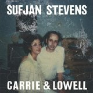21. Sufjan Stevens
“The Only Thing”
(from “Carrie & Lowell” on Asthmatic Kitty)
The clearest precedent to Carrie & Lowell in Sufjan Stevens’ discography is probably Romulus, in which he laments both the physical and emotional distance that separated him and his mother throughout his childhood. In The Only Thing, Sufjan seems both closer to and further from her than ever. Whereas the subject of Romulus was Sufjan and his siblings trying and failing to find some connection with their mother, The Only Thing finds him grappling with her importance to his life only in the wake of her loss. It’s almost too devastating to listen to with any regularity, which is unfortunate given the astonishing beauty in his floating guitar and fragile falsetto. Brad Hanford
20. Leon Bridges
“Coming Home”
(from “Coming Home” on Columbia Records)
He's got good looks and a sweet crooning voice, but what distinguishes Bridges from the perpetual parade of R&B hopefuls? For one, he's got songwriting skills that favour emotion over flash. This track is decidedly retro, with an unforced melody riding on a stroll beat, straddling late doo-wop and early Stax. Yet this is no pastiche; a mainstream sound would be the wrong vehicle for these emotions. Bridges doesn't need that straitjacket, being at ease dealing with intangibles. Aided by members of White Denim, the playing has the warm feel of a live performance and Bridges' delivery adds context beyond the lyrics. Angel Aguilar
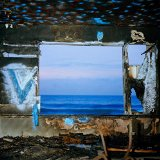19. Deerhunter
“Snakeskin”
(from “Fading Frontier” on 4AD)
Bradford Cox’s musical persona is usually wrapped with a semblance of authenticity, a trait that has only strengthened with each successive release. Snakeskin may very well allude to his time spent hospitalised after being hit by a car, where Cox seems to be trapped in some kind of confused dream that he cannot shake. He’s detached and lost, almost as if he’s imagined the glammed-up braggadocio of Monomania that came before it. But in his typical way, Cox doesn’t waste the opportunity to further examine his past insecurities, and stretches his artistic reach by injecting rhythm and groove with a sly form of resistance. Snakeskin doesn’t sound like any other track on Fading Frontier, since the rest of the album ebbs and flows like a calm stream, making for an intriguing left curve coming from someone who repeatedly nurtures the deep inner faculties of his imagination. Juan Edgardo Rodriguez
18. U.S. Girls
“Damn That Valley”
(from “Half Free” on 4AD)
The lead single from outsider chameleonic pop auteur Meghan Remy's excellent breakout album, Half Free, is a dubby, claustrophobic wail from the perspective of a widow who lost her soldier husband to friendly fire. The song's anxious verse melody is confined to a tense three-note range, but in the hooks, Remy bursts over into a piercing scream: “That’s the valley that took my MAN from me”. It’s the little details that make this so replayable – its layers of synth swathes are paper-thin but intricately detailed; its lilting bassline awkwardly wrong-foots you. Its jarring mix of stasis and catharsis, and of bedroom pop and studio sheen made this track unique, a politicised message told through personal affect. Stephen Wragg
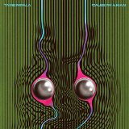17. Tame Impala
“’Cause I’m a Man”
(from “Currents” on Modular Recordings)
Kevin Parker further cemented his position as a once-in-a-generation talent this year with the release of Tame Impala’s third LP, and on the home stretch of Currents, ‘Cause I’m a Man steals the show. It’s a straight up pop song, with an over-affectionate bassline snuggling up to a stunning synth-scape. Parker’s falsetto is at its absolute serene best, balking under his own resignation, with the track smouldering beautifully from start to finish. This is a song that is both sugary sweet and elegantly agonising, and is the epitome of Parker’s ability to render a beautiful image over a much more disconsolate proposition. Exquisite stuff. Carl Purvis
16. Sufjan Stevens
“Death with Dignity”
(from “Carrie & Lowell” on Asthmatic Kitty)
This haunting ballad sets the tone for Carrie & Lowell, paving the way for a vivid emotional experience. It is a first for Stevens, who in the past had avoided personal songs. The lyrics here are as naked as its arrangement: “I forgive you, mother, I can hear you, and I want to be near you, but every road leads to an end.” Still, the imagery strives for the universal, a realm so open that the listener might find their own personal story within these verses. This is a song about coming to terms with the past; though pain will resurface with each memory, forgiveness will provide a safe passage. Angel Aguilar
15. Shamir
“On the Regular”
(from “Ratchet” on XL)
The Las Vegas native’s first single on XL is, unsurprisingly, a self-confident introduction to the life and times of Shamir Bailey. What stops you in your tracks though, is Shamir’s otherworldly countertenor, a voice that provides a thrilling counterpart to the braggadocio that characterises On The Regular and much of modern-day hip-hop and R&B. Over electronic bleeps and bloops that sound like the work of a bedroom-dwelling laptop producer, Shamir’s rapid-fire delivery gives an exhaustive list of reasons why he’s the next big thing. By the time we pause for breath at the breakdown, we’ve had four verses, two bridges and five choruses, and we’re only two minutes in. By turning the tropes upside-down, this “five foot ten, about a buck twenty” MC made one of the most arresting and assured launch singles of recent times. Expect big things in 2016 and beyond. Joe Rivers
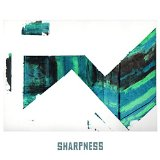14. Jamie Woon
“Sharpness”
(from “Making Time” on Polydor)
Jamie Woon couldn’t have hoped for much of a better (and more ‘2015’) launch for Sharpness, lead single from his second album Making Time and his first new material in four years. Not only did it receive its world premiere on Pharrell Williams’ Beats 1 but, shortly after, it was selected by Disclosure as one of a handful of tracks to appear on a special BBC Radio 1 show they co-presented with Annie Mac. Yet despite this dream launch, and as is so often the case for talented pop musicians, he has still yet to break through into the mainstream and get the recognition and success that he deserves. Never mind, Jamie, hopefully the fact that this beautiful, minimalistic and soulful track makes it into our top 25 tracks of the year will go some way to make up for the fact that your breakthrough has yet to come. Craig Stevens
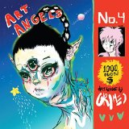13. Grimes
“Kill V. Maim”
(from “Art Angels” on 4AD)
Apparently it’s about Al Pacino in The Godfather II, but if he could change gender and were a vampire travelling through space. Original and odd, Grimes’ Kill V. Maim managed to sound like a pep rally, the theme to a ‘90s anime and a club banger, all in the space of four minutes. Every single second sticks in your head, from the opening electronic loop to the gender swapping verses, the cheerleader chant to the helium chorus, forcing you to jump around the kitchen singing, “B-E-H-A-V-E arrest us!" praying that no one sees or hears you. It’s a sugar rush and pure pop, yet so distorted it could never hit number one. James McKenna
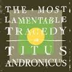12. Titus Andronicus
“Dimed Out”
(from “The Most Lamentable Tragedy” on Merge)
Dimed Out is just about everything I could want out of a Titus Andronicus song these days. Spitting vocals, manic lyrics, loud guitars, visceral production with just a mild, cosmetic polish to it — in a lot of ways, it is everything Local Business was lacking without becoming The Monitor Part II. And that is not at all a veiled barb at Local Business, an album which I still think carried some exceptionally strong moments especially in regard to its lyrics but, in hindsight, the production of that album was rather thin and left the listener wanting. However, it is easy to see that on Dimed Out the current line-up of the band (the same one on Local Business, mind you) have found their footing and can pump out stripped-down, powerhouse punk riffs with the same sonic girth as their greatest works of years past. Andrew Ciraulo
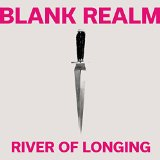11. Blank Realm
“River of Longing”
(from “Illegals in Heaven” on Fire Records)
The title to Blank Realm’s superb single from Illegals In Heaven suggests an isolated retreat where old wounds are hopefully cleansed. Even the natural vistas they mention are portrayed as if taking a journey within, but the antsy excitement of the track clearly illustrates a need to reach out with an all-inclusive invitation. River of Longing begins with a resounding synth loop emanating light in all directions, powered with an urgency that’s entirely of the moment. It leads into a choral duel provided by the Spencer siblings, feeding off each other in a giddy, light-hearted manner as the tangled, gossamer instrumentation lends an exultant, life-affirming effect. The Australian band are no strangers to writing ramshackle anthems that stick with you, though instead of locking into a fuzzy drone it’s the first time they’ve unchained their concealed pop smarts with such confidence. Juan Edgardo Rodriguez
10. Torres
“Strange Hellos”
(from “Sprinter” on Partisan Records)
Taut, dulled guitar strings create the bed on which Strange Hellos is built. "Heather I dreamt that I forgave / That only comes in waves / I hate you all the same," Mackenzie Scott plainly speaks, nearly emotionless. Then the drums kick in, and the song starts to coalesce and naturally grow in ebbs and flows, as Scott slowly unleashes more passionate vocals, like she's losing control of that restraint at the beginning of the track. Finally, she erupts in the incredible final minute, violently ripping lines like, "What's mine isn't really yours / But I hope you find what you're looking for", from her throat as grungy guitars shred underneath. Strange Hellos is a pure build-up of rage; a fire that spreads wildly, gloriously burning everything it touches. Joe Marvilli
9. Grimes“REALiTi”
(from “Art Angels” on 4AD)
Grimes has had a tough time following up Visions’ success, with the previously prolific artist going rather quiet, and talk of at least one album’s worth of scrapped material. So, REALiTi’s ‘everyday life is hard’ message was perhaps easier to swallow than in most pop songs. The fact that REALiTi was, initially, just a throwaway track, scrubbed up as best possible from a discarded demo, made it all the more extraordinary – that something this immaculately put together could be seen as surplus to requirements was difficult to comprehend (thankfully, Grimes has since seen sense and given it a cleaner, but equally strange in its own way, re-recording). And it really is extraordinary, weaving the direct and the enigmatic together in both its lyrics and production, where a soaring hook is buried in the mix among chattering, indecipherable vocals, clattering percussion and synth sounds not heard since trance ruled the charts. Mark Davison
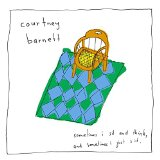8. Courtney Barnett
“Elevator Operator”
(from “Sometimes I Sit and Think, and Sometimes I Just Sit” on Marathon Artists Limited)
Writing about Courtney Barnett's music, for me at least, is defined by a constant struggle to avoid giddily quoting her lyrics. The power of Barnett's words, noteworthy enough on the page, is amplified ten-fold by her idiosyncratic delivery - evidently Australian but unlike any other singer, Australian or otherwise. This is why quoting her lyrics is a futile task; if by some strange turn of events you haven't heard Elevator Operator yet, you'll thank me for letting you discover them first-hand. Many of Barnett's songs are brutally honest, autobiographical affairs; in contrast, this is character driven, and it's difficult to recall a three minute pop song illuminated by such fully-realised characters. Make no mistake, Courtney Barnett is a significant talent. I could (almost) understand some people finding Pedestrian at Best a little grating. If you are among them, I suggest you give this or the equally brilliant Depreston a try. I can't imagine you'll regret it. David Coleman
7. Tobias Jesso Jr.
“How Could You Babe”
(from “Goon” on True Panther Sounds)
Tobias Jesso Jr. is a pure songwriter. His songs have a timeless quality about them, and his cosy, naturally expressive voice allows them to unfold with a floaty tenderness. How Could You Babe is simply stunning. It is exquisite in its melodic bedrock, and its AM radio textures make the track irresistibly snug and outstandingly intimate. The verses falter, labouring their way to the summit that is the chorus, and the deliverance of it aches with desperation and anguish. The final chorus is testament to Jesso Jr.’s structural and storytelling sensibility, with his voice straining to breaking point in one last outpouring of heartache. Gorgeous. Carl Purvis
6. Father John Misty
“Bored in the USA”
(from “I Love You, Honeybear” on Bella Union)
For a few months earlier in the year, I simply couldn't stop listening to Father John Misty. Consequently, I'm a little tired of I Love You, Honeybear now, with the notable exception of this song. While essentially a stinging criticism of the middle-class American existence, many of the sentiments expressed (futility of university education, the sense of being stuck in a rut, lack of fulfilment) will resonate strongly with debt-ridden graduates the world over - a demographic that I imagine forms a considerable chunk of Josh Tillman's fanbase. But even if you can't relate, the stark honesty of lines like "Now, I've got a lifetime to consider all the ways I've grown more disappointing to you / As my beauty warps and fades" is truly spellbinding. David Coleman
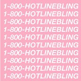5. Drake
“Hotline Bling”
(stand-alone single on Cash Money Records)
It says a lot about the raw brilliance of Hotline Bling that it's survived memes ad absurdum, (the nadir being Donald Trump's bizarrely embarrassing PR coup as host of SNL), and that it comes out of the cultural mangle sounding no less elegant. At the moment, when I listen to it I'm rooting for the woman who's clearly having a wonderful time ever since Drake left the city. Drake seems like a pretty overbearing "nice guy" and I feel that there's something slightly pernicious about that – but her happiness turns the tables on Drake, ironising the persistent clinginess of his on-mic persona. Still, we can all relate to the FOMO brought on by scrolling through the social media of someone we don’t see any more – and it’s that, plus Nineteen85’s effortlessly relaxed yet subtly yearning beat, that made this an instantly ubiquitous classic. Stephen Wragg
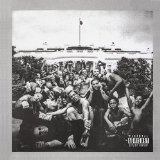4. Kendrick Lamar
“King Kunta”
(from “To Pimp a Butterfly”on Aftermath/Interscope)
When To Pimp a Butterfly dropped on 15th March, King Kunta was the track everyone immediately latched onto, and there were think-pieces, hot takes and reaction GIFs before the day was out. Furnished with the perfect beat for aggressive head-nodding, King Kunta allows Kendrick to tell the story of his own rise to fame, as well as the struggle of the black community, through the tale of Kunta Kinte, a fictional slave who chose to have his foot amputated rather than be castrated. It’s lyrically dense, finding time to document Richard Pryor and Bill Clinton’s struggles with temptation, to reference James Brown and George Clinton, and to call out MCs who use ghostwriters. All this with dextrous rhymes and ferocious spitting, and it’s still a club anthem .King Kunta finishes with repeated calls for “the funk”. Kendrick definitely has the funk. Joe Rivers
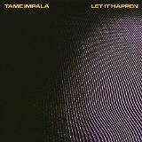3. Tame Impala
“Let It Happen”
(from “Currents” on Modular Recordings)
Let It Happen is an eight minute glittery, neon-drenched disco party that is more or less constantly on the verge of tearing itself apart, only to glitch itself into perfect synchronicity in its final moments. It is a singular experience — arguably one that Tame Impala fail to replicate on the rest of Currents — and seems to represent a very clear line of demarcation between the band’s old psych-rock repertoire and their new electronic-influenced work. However, the truly fascinating aspect of Let It Happen is its way of manipulating the emotions of its listeners by merely interrupting the repetition of its chorus and creating something new out of its sputtering remnants. Has it been done before? Sure, but rarely this effectively. Andrew Ciraulo
2. Jamie xx
“Loud Places (feat. Romy)”
(from “In Colour” on Young Turks)
Jamie xx’s solo output captivates because it manages to make being airborne feel eye-level. It makes the streaking cirrus clouds and colourful auroras his productions emit feel like warm, fuzzy blankets, making altitude-pushing hot air balloons out of beds. However, only one song on his instant classic debut LP conveys the struggle that comes with reaching those heights alone, and fittingly, it comes with some help from an old friend. What sets Loud Places apart from Jamie’s main gig is how revelatory it feels; its thumping beats and chanting samples offer contrast to Romy’s soulful, lovelorn words. It’s perfect testament to the idea that, no matter how low and helpless we feel we are, nothing can lift us off our feet and into the clouds like the perfect song to sing along to. Peter Quinton
1. Courtney Barnett
“Pedestrian At Best”
(from “Sometimes I Sit and Think, and Sometimes I Just Sit” on Marathon Artists Limited)
The first single from Barnett's debut Sometimes I Sit and Think, and Sometimes I Just Sit, Pedestrian At Best is immediately catchy and immediately pure rock n' roll. Her dry, self-deprecating humour, her effortlessly witty lyrics without delving into the realm of self-reflection or ironic detachment ("Give me all your money and I'll make some origami, honey"), is refreshing, but ultimately only icing on the cake. The fact is that she belts; her fast-paced near-singing on this track – well, it hardly matters what she says because she's so confident doing it, and what grabs you is the simplicity. Drums. Bass. Guitar. Voice. That's it. Infectious, unornamented rock. In a time when everybody is trying to outdo each other with the next hyper-embellished and overwrought musical show-offmanship, Pedestrian At Best towers over it all proudly as a testament to the tried and true rock n' roll formula. Consider the genre, in its purest form, single-handedly revived by a girl from Melbourne. Why fix what ain't broken? Gabbie Nirenburg